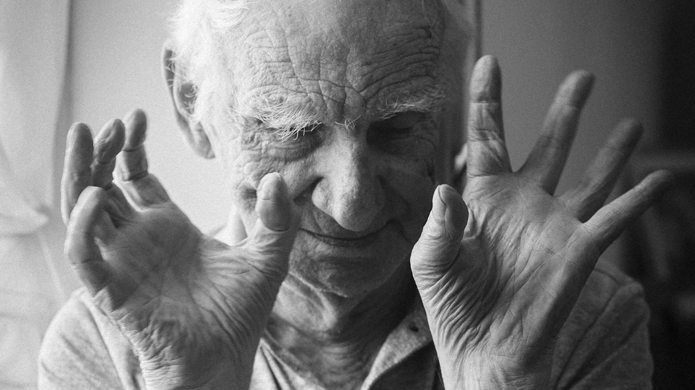
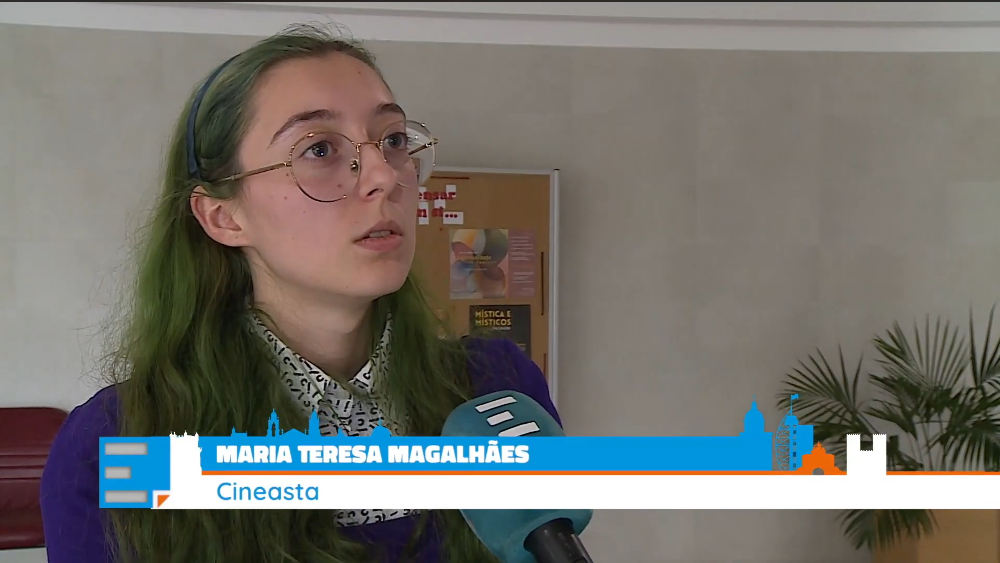
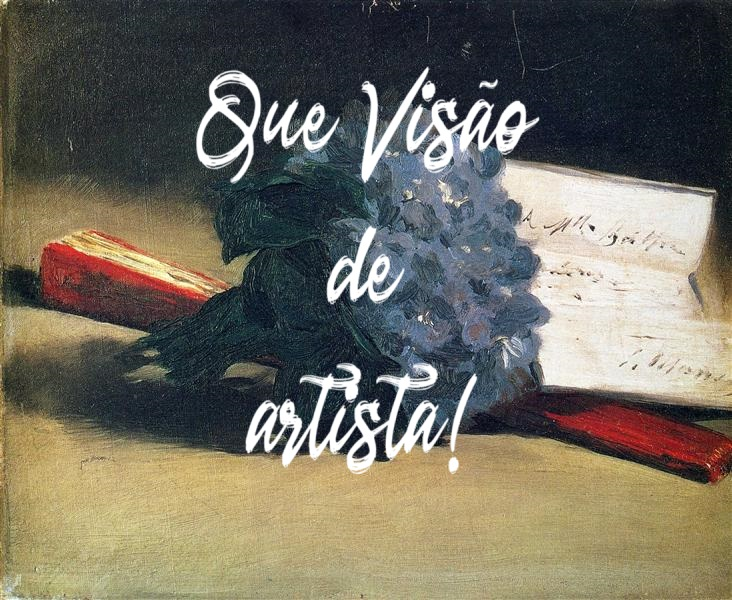

Onde o Cinema encontra a Arte
Cinematic journeys through the lives, minds, and canvases of art history’s greatest names.
Ver FilmesSobre

O meu nome é Maria Teresa Magalhães e produzo vídeos e documentários sobre arte. O meu objetivo é, através de breves vídeos, contar histórias sobre obras e artistas, tornando esse conteúdo acessível para todos. Um pouco como uma visita guiada que o público pode ver em qualquer altura.
Esta paixão por misturar o meu conhecimento sobre arte com os meus estudos em cinema surgiu depois de viver na Suécia durante um ano. Ao longo desse ano, visitei todos os grandes museus de Estocolmo e descobri quão avançados eles se encontram tecnologicamente. Através de vídeos, sites e posts nas redes sociais, pude aprofundar o meu conhecimento sobre as suas obras. Ao voltar a Portugal, dediquei-me a aprofundar os meus estudos em História da Arte Portuguesa e as minhas capacidades em videografia, procurando algum dia poder associar o meu trabalho com instituições culturais em Portugal.
Atualmente, estou a colaborar com o museu da Covilhã na sua exposição sobre Eduardo Malta intitulada Olhares que contam histórias, produzindo vídeos sobre as obras de Eduardo Malta presentes no Museu e as suas ideias e objetivos como artista.
Ensaios de Arte


Eduardo Malta
Uma pequena visita guiada à primeira parte da exposição sobre Eduardo Malta Olhares que contam histórias no museu da Covilhã.
VerSubitamente — que visão de artista!Se eu transformasse os simples vegetais,À luz do Sol, o intenso colorista,Num ser humano que se mova e existaCheio de belas proporções carnais?!— Cesário Verde
Outros Projetos
Para além da história da arte, descobrir uma pequena aldeia literária, experienciar um ataque de ansiedade, encontrar a sua metade animal...

Em Nome da Terra
Durante o mês de junho, os livros dos autores convidados do festival literário Em Nome da Terra entraram nas casas da aldeia de Melo. Esta iniciativa uniu literatura, comunidade e memória num gesto íntimo e poético.
Uma e Outra Vez
Uma e Outra Vez é uma viagem em tempo real de uma pessoa que passa por um ataque de ansiedade. Uma montanha-russa de emoções, pensamentos e sensações, que levam uma pessoa ao desespero e ao pânico.
Ver{kind=link}
Viver Numa Mentira
Viver Numa Mentira é um filme que explora a relação que um artista vive entre a realidade e a arte.

A Metade Animal
Nomeado para Melhor Cartaz Sophia Estudante 2023
A Metade Animal é um filme sobre a ligação entre animais e humanos. Seguimos as vidas de um coelho e de um humano e observamos como se desenrolam em uníssono.
Filosofia
Ao olhar para uma obra de arte, de repente é possível ver o mundo através do olhar de outra pessoa. Por uns segundos, estou livre de mim própria, capaz de ver através do outro. É isso que procuro com cada projeto, cada obra para a qual olho. Encontrar a visão do artista.
Fotografia na Roménia
Documentação fotográfica de escavações arqueológicas em Cornești-Cornet na Roménia.

O caminho

O trabalho

O descanso
Em 2022, recebi a incrível oportunidade de filmar e fotografar a maior escavação arqueológica da Idade do Bronze da Europa. O sol era intenso todos os dias, em que acordava às seis da manhã pronta para desvendar tesouros. Ao tocar na terra era possível sentir pequenos pedaços de barro revestidos de belos padrões. Terreno sem fim cheio de memórias, vidas e objetos prontos a ver o luminoso sol da Roménia após vários séculos escondidos.
Living Art Museum na Islândia
Foi a trabalhar no Museu Nýlistasafnið na Islândia que encontrei a minha paixão. Durante esse tempo, aprendi a receber visitantes, a ajudar a planear eventos e também a gerir as redes sociais, onde trabalhei ativamente fotografando e postando novidades. Adorei absolutamente o trabalho, a variedade, o inesperado do dia a dia, a curiosidade de visitantes de todo o mundo. Os meus colegas no Museu referiam-se a mim como alguém que conversava com todos e que estava sempre feliz, e devo dizer que trabalhar num museu trará sempre um sorriso ao meu rosto.
Foi na Islândia que descobri que não podia esquecer o meu amor por cultura e arte. Que essa paixão estaria sempre presente no meu caminho enquanto artista.

Abertura da exposição Desire Paths

Desire paths

Abertura da exposição Why is Iceland so poor?
Entrevista

Contacto
